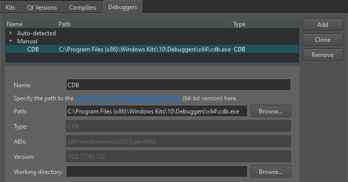

Add debuggers
The Qt Creator debugger plugin acts as an interface between the Qt Creator core and external native debuggers such as the GNU Symbolic Debugger (GDB), the Microsoft Console Debugger (CDB), a QML/JavaScript debugger, and the debugger of the low level virtual machine (LLVM) project, LLDB.
The debugger plugin automatically selects a suitable native debugger for each kit from the ones found on your system. To override this choice, select Preferences > Kits.
To add debuggers:
- Select Preferences > Kits > Debuggers > Add.

- In the Name field, give a descriptive name for the debugger.
- In the Path field, specify the path to the debugger binary:
- For CDB (Windows only), specify the path to the Windows Console Debugger executable,
cdb.exe.The 32-bit version can only debug 32-bit executables, whereas the 64-bit version can debug both 64-bit and 32-bit executables. For more information, see Debugging Tools for Windows.
- For GDB, specify the path to the GDB executable. The executable must be built with Python scripting support enabled.
- For LLDB (experimental), specify the path to the LLDB executable.
Qt Creator attempts to identify the type and version of the debugger and shows them in the Type and Version fields. In addition, Qt Creator shows the ABI version that will be used on embedded devices in the ABIs field.
- For CDB (Windows only), specify the path to the Windows Console Debugger executable,
- In the Working directory field, specify the working directory of the application process. If the application runs locally, the working directory defaults to the build directory. If the application runs remotely on a device, the value depends on the shell or the device. Usually, you can leave this field empty.
Remove debuggers
To remove the selected manually added debugger, select Remove. The debugger disappears from the list when you select Apply. Until then, you can cancel the deletion by clicking Restore.
See also Debugging, Setting Up Debugger, and Troubleshooting Debugger.